File: 000300.gt.txt (if the image is defective, simply delete all Arabic text and the line will be excluded)
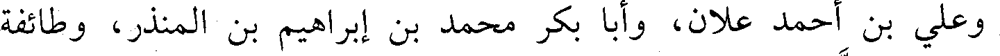
وعلي بن أحمد علان، وأبا بكر محمد بن إبراهيم بن المنذر، وطائفة
File: 000301.gt.txt (if the image is defective, simply delete all Arabic text and the line will be excluded)
سواهم بالشام، ومصر، والحجاز.
File: 000302.gt.txt (if the image is defective, simply delete all Arabic text and the line will be excluded)
وعنه تمام الرازي، ومكي بن الغمر، وعبدالوهاب الميداني، وأبو
File: 000303.gt.txt (if the image is defective, simply delete all Arabic text and the line will be excluded)
الحسن بن جهضم، وعلي بن بشر بن العطار، ومحمد بن عوف المزني.
File: 000304.gt.txt (if the image is defective, simply delete all Arabic text and the line will be excluded)
وولد سنة ست وثمانين ومئتين.
File: 000305.gt.txt (if the image is defective, simply delete all Arabic text and the line will be excluded)
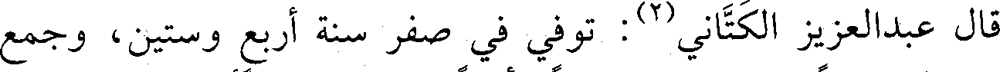
قال عبدالعزيز الكتاني(2) : توفي في صفر سنة أربع وستين، وجمع
File: 000306.gt.txt (if the image is defective, simply delete all Arabic text and the line will be excluded)
من المصنفات شيئا كثيرا، وكان ثقة مأمونا، انتقى عليه أحمد بن القاسم
File: 000307.gt.txt (if the image is defective, simply delete all Arabic text and the line will be excluded)
ابن الخشاب بدمشق.
File: 000308.gt.txt (if the image is defective, simply delete all Arabic text and the line will be excluded)
117 - عبدالرحمن بن الحارث ابن أبي شيخ، أبو أحمد الغنوي.
File: 000309.gt.txt (if the image is defective, simply delete all Arabic text and the line will be excluded)
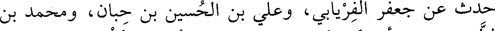
حدث عن جعفر الفريابي، وعلي بن الحسين بن حبان، ومحمد بن
File: 000310.gt.txt (if the image is defective, simply delete all Arabic text and the line will be excluded)
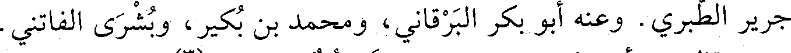
جرير الطبري. وعنه أبو بكر البرقاني، ومحمد بن بكير، وبشرى الفاتني.
File: 000311.gt.txt (if the image is defective, simply delete all Arabic text and the line will be excluded)
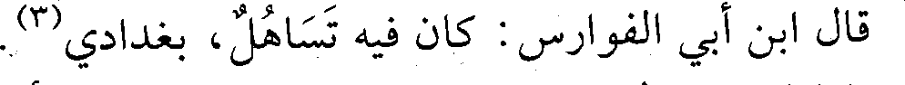
قال ابن أبي الفوارس: كان فيه تساهل، بغدادي(3).
File: 000312.gt.txt (if the image is defective, simply delete all Arabic text and the line will be excluded)
118 - عبدالرحمن بن محمد بن جعفر، أبو بكر الأصبهاني
File: 000313.gt.txt (if the image is defective, simply delete all Arabic text and the line will be excluded)
الكسائي.
File: 000314.gt.txt (if the image is defective, simply delete all Arabic text and the line will be excluded)
سمع أبا بكر بن أبي عاصم(3).
File: 000315.gt.txt (if the image is defective, simply delete all Arabic text and the line will be excluded)
229
File: 000316.gt.txt (if the image is defective, simply delete all Arabic text and the line will be excluded)
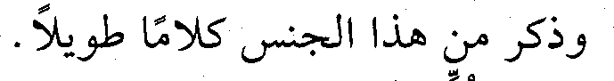
وذكر من هذا الجنس كلاما طويلا.
File: 000317.gt.txt (if the image is defective, simply delete all Arabic text and the line will be excluded)
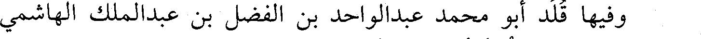
وفيها قلد أبو محمد عبدالواحد بن الفضل بن عبدالملك الهاشمي
File: 000318.gt.txt (if the image is defective, simply delete all Arabic text and the line will be excluded)
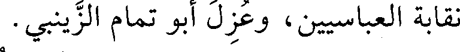
نقابة العباسيين، وعزل أبو تمام الزينبي.
File: 000319.gt.txt (if the image is defective, simply delete all Arabic text and the line will be excluded)
وفيها ظهر ما كان المطيع لله يستره من مرضه وتعذر الحركة عليه
File: 000320.gt.txt (if the image is defective, simply delete all Arabic text and the line will be excluded)
وثقل لسانه بالفالج، فدعاه حاجب عز الدولة الحاجب سبكتكين، إلى
File: 000321.gt.txt (if the image is defective, simply delete all Arabic text and the line will be excluded)
خلع نفسه، وتسليم الأمر إلى ولده الطايع لله، ففعل ذلك، وعقد له الأمر في
File: 000322.gt.txt (if the image is defective, simply delete all Arabic text and the line will be excluded)
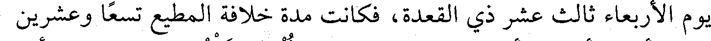
يوم الأربعاء ثالث عشر ذي القعدة، فكانت مدة خلافة المطيع تسعا وعشرين
File: 000323.gt.txt (if the image is defective, simply delete all Arabic text and the line will be excluded)
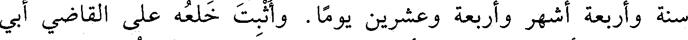
سنة وأربعة أشهر وأربعة وعشرين يوما. وأثبت خلعه على القاضي أبي
File: 000324.gt.txt (if the image is defective, simply delete all Arabic text and the line will be excluded)
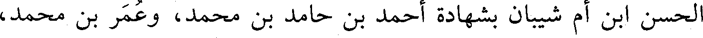
الحسن ابن أم شيبان بشهادة أحمد بن حامد بن محمد، وعمر بن محمد،
File: 000325.gt.txt (if the image is defective, simply delete all Arabic text and the line will be excluded)
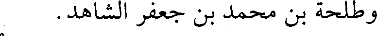
وطلحة بن محمد بن جعفر الشاهد.
File: 000326.gt.txt (if the image is defective, simply delete all Arabic text and the line will be excluded)
وقال أبو منصور بن عبدالعزيز العكبري: كان المطيع لله بعد أن خلع
File: 000327.gt.txt (if the image is defective, simply delete all Arabic text and the line will be excluded)
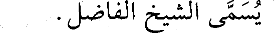
يسمى الشيخ الفاضل.
File: 000328.gt.txt (if the image is defective, simply delete all Arabic text and the line will be excluded)
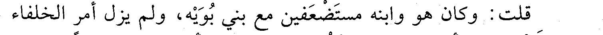
قلت: وكان هو وابنه مستضعفين مع بني بويه، ولم يزل أمر الخلفاء
File: 000329.gt.txt (if the image is defective, simply delete all Arabic text and the line will be excluded)
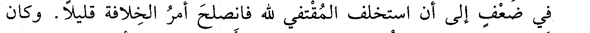
في ضعف إلى أن استخلف المقتفي لله فانصلح أمر الخلافة قليلا. وكان
To Save: `Ctrl+s`, make sure to choose `Webpage, complete`!